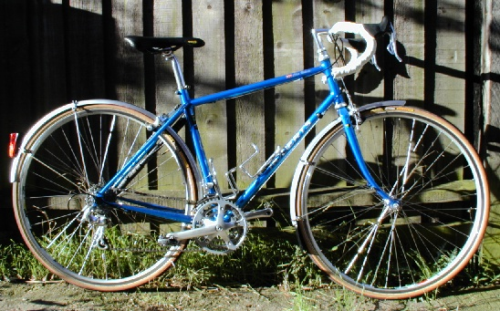
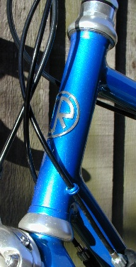
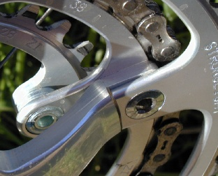

 This is a modified version of a test of women's road bikes I wrote for Cycling Plus in December '99.
Women are built different from men, and this has implications on what sort of bike they need. The explanation for this varies depending on whom you talk to. According to a great many people, including Pete Bird of Tandemania, on average, a woman will have longer legs and a shorter torso and arms than a man of the same height. Thus a woman needs a bike with a shorter top tube and higher handlebars to allow her to reach the handlebars more easily. However, Chris Juden (the CTC's Technical Officer) states that this is a myth, as shown by the stats found in the DTI's Adultdata information. Chris still supports the idea of higher and closer handlebars, saying that women's backs seem to bend differently. Either way, the result is the same: women often feel too stretched out on standard bikes.
For more than a decade Roberts Cycles have been developing bikes for women. Since the main goal in a woman's bike is a shorter saddle to handlebar reach, small wheels are a common feature on womens bikes. Roberts' bikes include racing style bikes based on 650c (ISO 571mm) wheels and expedition touring bikes based on 26" (ISO 559mm) mountain bike wheels (the Rough Stuff).
In developing a bike for Audax-type use they considered using 26" wheels. However until recently, there was very little choice of road tires for these wheels. Now there are quite a few slick tires, but there isn't a very good selection of narrow ones suitable for Audax use. Thus for the best selection of tires the 700c (ISO 622mm) wheel is the way to go.
The Compact Clubman is a result of tinkering that Chas Roberts describes as "a centimeter here, a degree there." The bike can be made small enough to fit women down to about 5' tall. Women shorter than that will have to use 26" wheels and accept the limited sizes of tires.
With so much effort put into making a 700c wheeled bike that works for women, there is no room to change the geometry for specific purposes. The intended use of the bike is reflected in the equipment and the diameters and thickness of the frame tubes. The test bike is the Audax style, with thin lightweight Reynolds 531 tubes, dual pivot brakes, 25mm tires, and narrow mudguards. It was made to my measurements.
In the test below I'll compare the Compact Clubman to the womens bikes tested in C+96, especially the Cannondale, and my own Roberts Rough Stuff.
The most obvious feature of the frame is the sloping top tube. The seat tube is the usual length for me but the top tube joins the seat tube well below the top. From there it slopes up sharply to the top of the head tube. This results in a long head tube while preserving a good crotch clearance for road use.
The head tube is incredibly long at 15.5cm. This allows the handlebars to be higher and brings the handlebars closer to the saddle. The latter works because the seat tube angle is steeper than the head angle. For comparison, the head tube on my old steel touring bike (a typical 19" bike) is 8.5cm. Thanks to a 1cm spacer in the headset, the top of the headset is about level with the seat post clamp. You won't get a heads-down position on this bike.
The frame is beautifully fillet brazed except for the lugged bottom bracket. Braze-ons abound, with two sets for water bottles, a pump peg on the left seat stay, and a complete set of mudguard and rear rack fixings. The mudguards attach neatly via bolts into the fork crown and chainstay and seatstay bridges. There are little cable guides on the head tube, keeping the cable housing neat and off the paint.
The frame is very flexible due to thin tubes. The highly curved fork results in a large fork offset. This means that the fork flexes more when you hit bumps, as there is more leverage on the fork.
I had about 2cm of gap between my toe and the mudguard on the Compact Clubman. On the Cannondale, the only bike from the C+96 test that actually fit me, I had 1cm of toe overlap despite smaller wheels and tires and no mudguards.
The bottom bracket is quite low, which gives you a lower center of gravity and makes it easier to put a toe down for red lights, but it can lead to scraped pedals if you pedal in tight corners.
This bike is easy to ride, going just where you want with a minimum of effort. It has very steady straight-line handling, but goes around corners as fast as you would like. I felt especially confident going down hills. Perhaps the knowledge that the frame would cope well with any bumps I might meet encouraged me to let go the brakes and tuck in for a fast ride down. The Cannondale handles just slightly faster, responding a bit more quickly to rider input. However, there is little to choose between them.
The front hub is a shiny slender Campag Athena, while the rear is a fat matte Deore XT. While they don't match in looks, they do in performance. They both pass the spoke wrench test, which lets you check friction in the bearings. In both cases, attaching a spoke wrench to a spoke caused the wheel to slowly spin until it was rebalanced.
The rims are Mavic T217, which are very strong. The only problem they can have is rapid wearing of the braking surfaces, but this is mainly a problem in off-road riding. However the wide profile of the T217s look a bit out of place on this Audax style bike. Mavic MA2 rims would look svelter, would be plenty strong and just as durable, as well as being slightly lighter and much cheaper.
The spokes are DT stainless steel 14/15/14 double butted spokes, 36 per wheel. This is an excellent choice, as double butted spokes build into a stronger, more durable wheel than straight gauge spokes. The thinner middle allows them to temporarily stretch to absorb impacts, taking the strain off the fatigue-prone ends, and allowing more spokes to share the load.
The wheels are hand-assembled by Harry Rowland, and the result is a set of well-tensioned wheels that should never need truing, barring a large impact. These wheels ought to last until the braking surfaces wear out.
The tires are 25mm Michelin Axial Select which are fine for Audax use.
The derailleurs and shifters are Campagnolo Veloce 9-speed, while the hub and cassette are 8-speed Shimano. Roberts used the Shimano hub because its 135mm dropout spacing decreases the wheel dish. He wanted to allow the use of integrated shifters and brake levers, but Shimano STI levers were out. First, the shift cables prevent the use of a handlebar bag. Second, unless you get very expensive ones they don't allow you to trim the derailleur. This is essential to allow the shifters to be used with non-Shimano chainsets with short cranks.
The Campag shifters are expecting a 4.55mm gap between sprockets, but there is a 4.8mm gap between the Shimano sprockets. If you line of the indexing at the middle of the cassette, it will be about 1mm out at the ends. In practice you can set up the rear mech so that it works well over the entire cassette, but it will not be tolerant of slight misalignments. One way to avoid this, while sacrificing little in convenience, would be to use Shimano bar-end shifters and derailleurs.
The chainset is the Stronglight ST1000 with 165mm cranks. The 1000 is a good quality, reasonably priced chainset that comes in quite a range of crank lengths. The small chainring is bolted to extensions on the middle chainring, so it's easy to turn the chainset into a double.
The brakes, Shimano's RX100 long arm dual pivot brakes, stop the bike effectively. The short 8cm stem and short-reach 3T Forma handlebars help bring the brake/shift levers closer in. Although the mudguard are SKS there are no emergency releases on the fork mounts.
Comfort on a bike is determined by three things: shock absorbency, rider position, and saddle. The saddle isn't worth discussing since it's such a personal issue. I didn't get on with the Turbo saddle provided with the bike, but I know women who swear by them.
The other aspects are less subjective, and this bike excels in them. The frame is very flexible and does a great deal to smooth out road shock. The flexibility of the frame is due to the tubes, which are narrow diameter and have thin walls. My Rough Stuff has bigger diameter tubes with thicker walls, resulting in a stiffer frame, although the bike absorbs shock as well as the Compact Clubman due to fatter, lower pressure tires.
The Compact Clubman is built for comfort. The bikes tested in C+96 were built for speed. While two of the bikes (the Vision and the Cannondale) did reasonably well at smoothing out some of the bumps, the Compact Clubman makes them feel like boneshakers. The drawback is that the Compact Clubman flexes when you really don't want it to. If you stand up to pedal, you can feel the bike move from side to side. If you pedal standing on the Cannondale, it doesn't give at all; it just shoots forward.
The tall head tube and clever geometry bring the handlebars up and closer to the saddle. This is the only bike where I have felt comfortable riding on the brake lever hoods and the drops for extended periods of time.
Other bike articlesThe Compact Clubman certainly is an extremely cleverly designed, very comfortable bike. I wish I'd had a bike this comfortable years ago. For several years I have been suffering from tendonitis in my elbows due to excessive weight on my hands, and this bike would have prevented the problem completely.
While the flexible frame will make it undesirable for sprinters, it is just the thing for longer rides. It's light enough to keep pedalling from being a chore, the mudguards keep you dry in uncertain weather, and the shock-absorbing frame and more upright riding position work to minimise body aches.
Nevertheless, I would never buy this bike. I just don't think it makes any sense to build a bike this small out of 700c wheels. I think it looks funny with the small frame with super-long head tube and big wheels. I much prefer the looks of the Cannondale I tested. There small wheels have been used to make a bike with much more traditional looks.
I take Roberts' point that there is a better selection of narrow tires in 700c size, but by now the selection of narrow slick MTB tires is good enough, and it will only continue to improve.
Roberts' workmanship is clearly excellent, and he's spent a great deal of time and effort desiging this bike. But it's time for him to abandon 700c wheels for such small bikes and put his skills into making women's bikes out of MTB wheels.